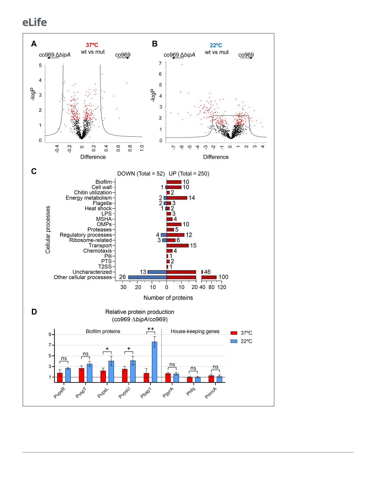

Research article
Microbiology and Infectious Disease
Figure 6. Global proteomic analysis of Vibrio . cholerae co969 wild-type (WT) vs. DbipA colonies grown at 37˚C and 22˚C. (A and B) Volcano plots
representing the log t-test p-value against the t-test difference for a comparison of protein levels between co969 WT vs. DbipA colonies grown at either
37˚C (A) or 22˚C (B). Black dots represent proteins belonging to the pool of non-differentially produced proteins between the WT and the DbipA strain;
red dots represent proteins that are significantly different between both strains at the given condition. Higher numbers of t-test difference and log
Figure 6 continued on next page
10 of 23